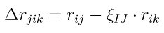
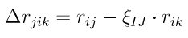
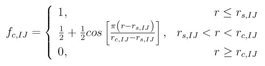
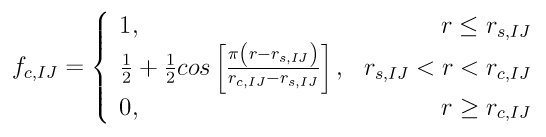
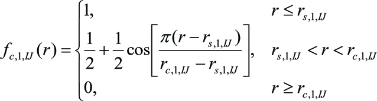
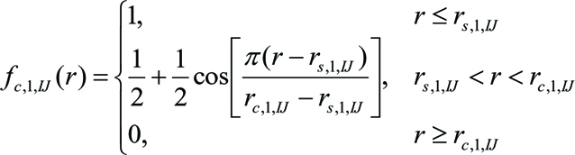

pair_style polymorphic command¶
Examples¶
pair_style polymorphic
pair_coeff * * TlBr_msw.polymorphic Tl Br
pair_coeff * * AlCu_eam.polymorphic Al Cu
pair_coeff * * GaN_tersoff.polymorphic Ga N
pair_coeff * * GaN_sw.polymorphic GaN
Description¶
The polymorphic pair style computes a 3-body free-form potential (Zhou) for the energy E of a system of atoms as

 

where I, J, K represent species of atoms i, j, and k, i_1, ..., i_N represents a list of i’s neighbors, delta_ij is a Direc constant (i.e., delta_ij = 1 when i = j, and delta_ij = 0 otherwise), eta_ij is similar constant that can be set either to eta_ij = delta_ij or eta_ij = 1 - delta_ij depending on the potential type, U_IJ(r_ij), V_IJ(r_ij), W_IK(r_ik) are pair functions, G_JIK(cos(theta)) is an angular function, P_IK(delta r_jik) is a function of atomic spacing differential delta r_jik = r_ij - xi_IJ*r_ik with xi_IJ being a pair-dependent parameter, and F_IJ(X_ij) is a function of the local environment variable X_ij. This generic potential is fully defined once the constants eta_ij and xi_IJ, and the six functions U_IJ(r_ij), V_IJ(r_ij), W_IK(r_ik), G_JIK(cos(theta)), P_IK(delta r_jik), and F_IJ(X_ij) are given. Note that these six functions are all one dimensional, and hence can be provided in an analytic or tabular form. This allows users to design different potentials solely based on a manipulation of these functions. For instance, the potential reduces to Stillinger-Weber potential (SW) if we set

The potential reduces to Tersoff types of potential (Tersoff or Albe) if we set
 

The potential reduces to Rockett-Tersoff (Wang) type if we set
 

The potential becomes embedded atom method (Daw) if we set

In the embedded atom method case, phi_IJ(r_ij) is the pair energy, F_I(X) is the embedding energy, X is the local electron density, and f_K(r) is the atomic electron density function.
If the tabulated functions are created using the parameters of sw, tersoff, and eam potentials, the polymorphic pair style will produce the same global properties (energies and stresses) and the same forces as the sw, tersoff, and eam pair styles. The polymorphic pair style also produces the same atom properties (energies and stresses) as the corresponding tersoff and eam pair styles. However, due to a different partition of global properties to atom properties, the polymorphic pair style will produce different atom properties (energies and stresses) as the sw pair style. This does not mean that polymorphic pair style is different from the sw pair style in this case. It just means that the definitions of the atom energies and atom stresses are different.
Only a single pair_coeff command is used with the polymorphic style which specifies an potential file for all needed elements. These are mapped to LAMMPS atom types by specifying N additional arguments after the filename in the pair_coeff command, where N is the number of LAMMPS atom types:
- filename
- N element names = mapping of Tersoff elements to atom types
See the pair_coeff doc page for alternate ways to specify the path for the potential file. Several files for polymorphic potentials are included in the potentials dir of the LAMMPS distro. They have a “poly” suffix.
As an example, imagine the SiC_tersoff.polymorphic file has tabulated functions for Si-C tersoff potential. If your LAMMPS simulation has 4 atoms types and you want the 1st 3 to be Si, and the 4th to be C, you would use the following pair_coeff command:
pair_coeff * * SiC_tersoff.polymorphic Si Si Si C
The 1st 2 arguments must be * * so as to span all LAMMPS atom types. The first three Si arguments map LAMMPS atom types 1,2,3 to the Si element in the polymorphic file. The final C argument maps LAMMPS atom type 4 to the C element in the polymorphic file. If a mapping value is specified as NULL, the mapping is not performed. This can be used when an polymorphic potential is used as part of the hybrid pair style. The NULL values are placeholders for atom types that will be used with other potentials.
Potential files in the potentials directory of the LAMMPS distribution have a ”.poly” suffix. At the beginning of the files, an unlimited number of lines starting with ‘#’ are used to describe the potential and are ignored by LAMMPS. The next line lists two numbers:
ntypes eta
Here ntypes represent total number of species defined in the potential file, and eta = 0 or 1. The number ntypes must equal the total number of different species defined in the pair_coeff command. When eta = 1, eta_ij defined in the potential functions above is set to 1 - delta_ij, otherwise eta_ij is set to delta_ij. The next ntypes lines each lists two numbers and a character string representing atomic number, atomic mass, and name of the species of the ntypes elements:
atomic_number atomic-mass element (1)
atomic_number atomic-mass element (2)
...
atomic_number atomic-mass element (ntypes)
The next ntypes*(ntypes+1)/2 lines contain two numbers:
cut xi (1)
cut xi (2)
...
cut xi (ntypes*(ntypes+1)/2)
Here cut means the cutoff distance of the pair functions, xi is the same as defined in the potential functions above. The ntypes*(ntypes+1)/2 lines are related to the pairs according to the sequence of first ii (self) pairs, i = 1, 2, ..., ntypes, and then then ij (cross) pairs, i = 1, 2, ..., ntypes-1, and j = i+1, i+2, ..., ntypes (i.e., the sequence of the ij pairs follows 11, 22, ..., 12, 13, 14, ..., 23, 24, ...).
The final blocks of the potential file are the U, V, W, P, G, and F functions are listed sequentially. First, U functions are given for each of the ntypes*(ntypes+1)/2 pairs according to the sequence described above. For each of the pairs, nr values are listed. Next, similar arrays are given for V, W, and P functions. Then G functions are given for all the ntypes*ntypes*ntypes ijk triplets in a natural sequence i from 1 to ntypes, j from 1 to ntypes, and k from 1 to ntypes (i.e., ijk = 111, 112, 113, ..., 121, 122, 123 ..., 211, 212, ...). Each of the ijk functions contains ng values. Finally, the F functions are listed for all ntypes*(ntypes+1)/2 pairs, each containing nx values. Either analytic or tabulated functions can be specified. Currently, constant, exponential, sine and cosine analytic functions are available which are specified with: constant c1 , where f(x) = c1 exponential c1 c2 , where f(x) = c1 exp(c2*x) sine c1 c2 , where f(x) = c1 sin(c2*x) cos c1 c2 , where f(x) = c1 cos(c2*x) Tabulated functions are specified by spline n x1 x2, where n=number of point, (x1,x2)=range and then followed by n values evaluated uniformly over these argument ranges. The valid argument ranges of the functions are between 0 <= r <= cut for the U(r), V(r), W(r) functions, -cutmax <= delta_r <= cutmax for the P(delta_r) functions, -1 <= costheta <= 1 for the G(costheta) functions, and 0 <= X <= maxX for the F(X) functions.
Mixing, shift, table tail correction, restart:
This pair styles does not support the pair_modify shift, table, and tail options.
This pair style does not write their information to binary restart files, since it is stored in potential files. Thus, you need to re-specify the pair_style and pair_coeff commands in an input script that reads a restart file.
Restrictions¶
If using create_atoms command, atomic masses must be defined in the input script. If using read_data, atomic masses must be defined in the atomic structure data file.
This pair style is part of the MANYBODY package. It is only enabled if LAMMPS was built with that package (which it is by default). See the Making LAMMPS section for more info.
This pair potential requires the newtion setting to be “on” for pair interactions.
The potential files provided with LAMMPS (see the potentials directory) are parameterized for metal units. You can use any LAMMPS units, but you would need to create your own potential files.